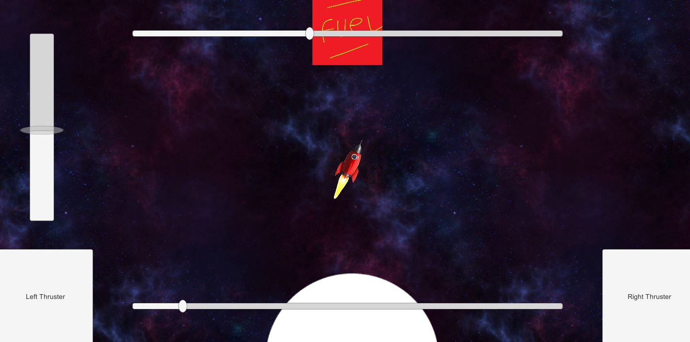

Optimised Raytracer
In our third year we were tasked with optimising a raytracing algorithm using low level programming techniques. We were also tasked with porting the program to linux and, while I started it and got marks for that, I did not finish that section. Regardless, my outlined method was sound enough to gain marks and I am very proud of how the project turned out. To Respository

Mobile Games Dev
During my third year I was tasked with creating a mobile game. Unfortunatly the project never got passed the vertical slice phase as it was focused on less in favor of my other modules. I still passed, but it is my one piece of work from third year I'm not too proud of.
To Respository
Semestor 3 Studio Simulation
In semestor 3 we had the opportunity to work in a simulated studio environment in order to produce an engine, which we were then to use to make a game. We produced a top down survivel game with crafting, animations, procedural generation, armor, combat etc.
To Respository

Dissertation
As it was my final year, I was tasked with making a dissertation. I chose to do mine on procedurally generating a worlds history. I wrote a well researched document and produced a unity project about the topic. The project procedurally generates a tile based world and then simulates how the world progresses as time goes on. This includes things such as settlement grow, water errosian and volcanic eruptions.
To Respository
The projects in this section are all from my second year of university. This is where I learned a lot of vital knowledge and I consider it a vital and pivotal step in my programming journey.

This Website
This website was an ongoing assignment during my time at university. I was only marked on it in the first semestor, but the importance of updating it was emphasised.
To Respository
Semestor 2 Group Project
During my second year at university we were given 3 weeks to make a very basic game using unity. I am not too proud of this project and consider it a failure. Many features are missing and the game has less content than what could be expected from a vertical slice
To Respository
Semestor 2 Task Based Software Engineering
During my second year at university I was told to make a simple program for a chain stores distribution database while making use of tasks to optimise the program. We were also told to try and port it to f# for more marks. I learned a lot about the task library during this project, but unfortunatly I ran out of time for the f# portion.
To Respository
Semestor 2 DirectX work
During my second year at university I was tasked building on my previous DirectX object. This involved adding more complex things to the program such as textures, physics, lighting etc. This is one of the most impactful projects from my time at university as I learned not only how to do these things in DirectX, but how they are done in general.
To Respository
Semestor 1 DirectX work
During my second year at university I was tasked with learning how to render objects using DirectX. This project involved rendering many shapes with the ability to have them rotate, go wireframe, orbit etc. While not as complex as I would have hoped, this module served as a good foundation for my future work with DirectX
To Respository
Networked and threaded chat client
During my second year at university I was tasked with creating a networked chat client that also utilised threading. This was my first project working with networking and parralel computing and I learned a great deal about both. I implemented a multitude of features such as private messaging to a specific user, changing nicknames and the ability to play hangman with other clients. I also wanted to implement a multiplayer pong game but I ran out of time.
To Respository
First Year University Projects
The projects in this section are all from my first year at university, before this I had never coded anything serious and had only ever coded in Visual Basic, so please keep that in mind when viewing any work from this time period.
Games Engine tasks semester 1
This is a respository of all of my Games Engine Creation tasks from semester 1 of university. Some may seem basic to me now but they were some of the first coding tasks I ever did in C++, and some of the first coding tasks I ever did at all.
To Respository
'Pacman Project'
For semester one of my Fundementals of Games and Graphical system development class were required to create a game that was an approximation of Pacman. I struggled with this task a lot as I had no prior knowledge of using c++ to display graphics. Even if it's not the best it could be I am very proud of how much my personal skills progressed while working on this project.
To Respository

3D Objects.
During my second term, I was tasked with creating some basic 3D objects with OpenGL that were textured, lit and read data from a file.
Portfolio
MarioBros.
During my second term, I was asked to create a simple game engine that emulated and early level of MarioBros using SDL
Portfolio